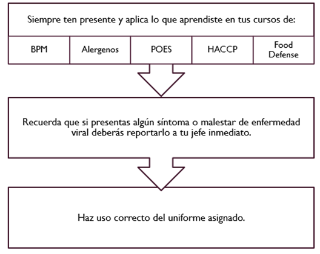
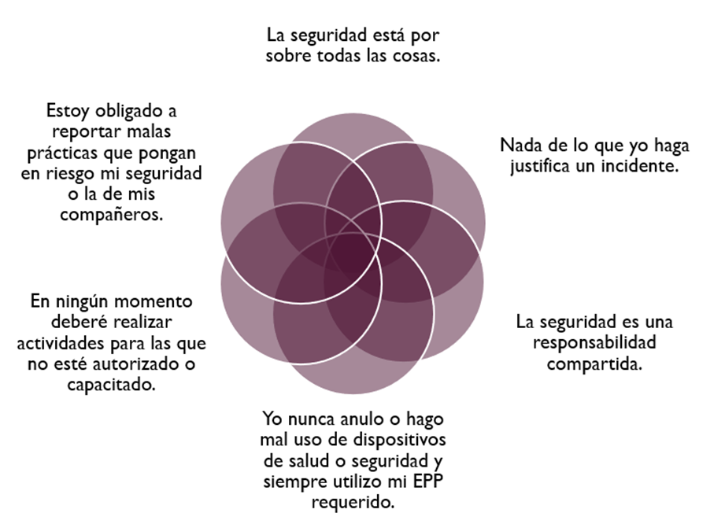

La capacitación es un proceso sistemático que tiene como objetivo enseñar a los empleados nuevas habilidades o mejorar las que ya poseen, asegurando que puedan cumplir de manera efectiva con sus responsabilidades laborales. La capacitación también busca incrementar el conocimiento técnico y práctico de los trabajadores en relación a las operaciones de la empresa.
Las capacitaciones tienen el propósito de garantizar que los empleados cuenten con las competencias necesarias para desempeñar sus tareas de forma eficiente y segura. Además, permiten el desarrollo personal y profesional de los trabajadores dentro de la organización.
1.- Realizar las actividades diarias de operación cumpliendo con los protocolos de inocuidad, seguridad y uso de maquinaria, impartido por los departamentos de calidad, seguridad y mantenimiento respectivamente.
2.- Dar a conocer el funcionamiento de la máquina para realizar una buena operación, sus puntos críticos a cuidar, parámetros de capacidades y los cuidados requeridos para garantizar las condiciones óptimas de la máquina, buscando disminuir paros de producción por incidencias operativas.
1.- Concientizar sobre la importancia de la inocuidad dentro del proceso productivo.
2.- Concientizar sobre la importancia de la seguridad industrial dentro del proceso productivo.
La inocuidad en los procesos productivos es esencial para garantizar que los productos no representen ningún riesgo para la salud del consumidor. Esto implica cumplir con normativas de higiene, procedimientos de limpieza y el correcto manejo de los insumos para evitar la contaminación cruzada.
COEX ALIMENTARIO CXC 1-1969 (2020): Garantía de que los alimentos no causarán efectos adversos en la salud del consumidor cuando se preparen o se consuman de acuerdo con su uso previsto.
ISO 22000:2018: Seguridad de que el alimento no causará un efecto adverso en la salud del consumidor cuando se prepare y/o consuma de acuerdo con su uso previsto.

BPM: Buenas Prácticas de Manufactura para asegurar la higiene y calidad en la producción.
Alérgenos: Sustancias en alimentos que pueden causar reacciones alérgicas; su gestión protege al consumidor.
POES: Procedimientos de saneamiento para la limpieza y desinfección en la manipulación de alimentos.
HACCP: Sistema para identificar y controlar peligros en puntos críticos del proceso alimentario.
Food Defense: Medidas para proteger alimentos contra adulteración intencionada, como ataques químicos o biológicos.
Una parte esencial de las capacitaciones es asegurar que los empleados conozcan y apliquen las normas de seguridad e higiene en sus áreas de trabajo. Esto incluye el uso adecuado del equipo de protección personal (EPP), la identificación de riesgos y el manejo seguro de las herramientas y maquinaria.
El objetivo es minimizar los accidentes laborales, cumplir con las normativas vigentes y fomentar una cultura de seguridad en toda la empresa.

En esta sección, se capacitará al personal sobre el uso, operación y mantenimiento de las máquinas de la planta. A continuación, se listan las principales máquinas:
Regresar al Inicio